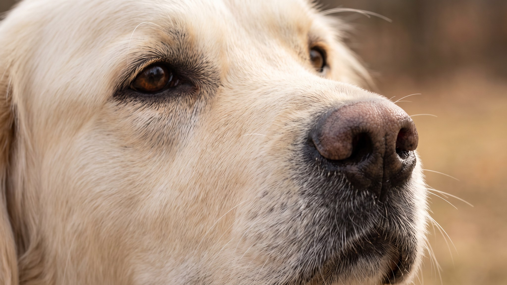

Кувас весит до 52 кг и принимает решения об охране территории без ожидания команды. Эту породу столетиями отбирали для охраны венгерских пастбищ от волков и медведей, послушание там было второстепенным. Именно поэтому с кувасом легко ошибиться: покупают пушистую белую собаку, а получают партнёра с твёрдым характером, требующего опыта. Ниже: честно о характере, нагрузке, уходе и о том, кому эта порода подходит.
🐾 У вас кувас?
AnimaLife соберёт уход под породу: к каким болезням есть склонность, что проверять по возрасту, чем кормить и когда пора к врачу. Бесплатно, прямо в мессенджере.
Собрать план ухода → Собрать в MAX →
У вас iPhone? AnimaLife есть в App Store
Кувас: венгерская порода с многовековой историей. Первые письменные упоминания датируются XV веком, в то время эти собаки охраняли королевские угодья Матьяша I. Потом порода перешла к крестьянам и веками работала пастушьим охранником на равнинах Венгрии. Задача была одна: держать скот целым и отогнать любую угрозу, волка, медведя или чужого человека. Под эту функцию порода и сложилась: независимая, бдительная, готовая действовать без подсказки.
Белый окрас был практическим решением: пастух ночью должен был отличить свою собаку от волка. Сегодня это стандарт породы, допускается только белый или слоновая кость.
Кувас не агрессивен сам по себе, но глубоко территориален. Он чётко делит мир на «своих» и «чужих» и действует по этому принципу постоянно, без переключения.
Кувас привязывается к конкретной семье и долго принимает новых людей. Это осознанная селекционная черта: порода создавалась для работы с одним хозяином, а не с потоком посторонних.
Кувас вынослив физически. Взрослой собаке нужны полноценные прогулки дважды в день: реальная нагрузка, долгая ходьба, бег, работа на площадке. Без нагрузки порода находит применение самостоятельно, и это редко нравится хозяину.
Дрессировка требует терпения и последовательности. Кувас умный, но работает с мотивацией, а не из желания угодить. Несколько практических моментов:
Самостоятельность породы не означает непослушание. Кувас хорошо обучается, если хозяин последователен и воспринимается собакой как авторитет.
У куваса густая волнистая шерсть средней длины с плотным подшёрстком. Дважды в год, весной и осенью, начинается интенсивная линька на несколько недель. В этот период вычёсывание каждый день обязательно, иначе шерсть сваливается плотными колтунами, которые приходится срезать. В остальное время достаточно 2-3 раз в неделю.
Кувас сложен в неправильных руках и надёжен в правильных. Несколько честных критериев:
Если у вас частный дом, есть опыт с крупными породами и время на воспитание, кувас станет надёжным охранником и преданной собакой на годы.
🐾 Ваш питомец — кувас?
Заведите профиль в AnimaLife: приложение запомнит породу, возраст и вес и будет подсказывать по уходу именно для неё. Вопросы AI-ветеринару — круглосуточно и бесплатно.
Завести профиль → Завести в MAX →
У вас iPhone? AnimaLife есть в App Store
🐾 Понравился разбор?
Подпишитесь на канал — каждый день разбираем по одному тревожному симптому у кошек и собак: что в пределах нормы, а когда пора к врачу. Подпишитесь, чтобы не пропустить разбор, который может спасти здоровье вашего питомца.
Материал носит информационный характер и не заменяет очную консультацию ветеринара.